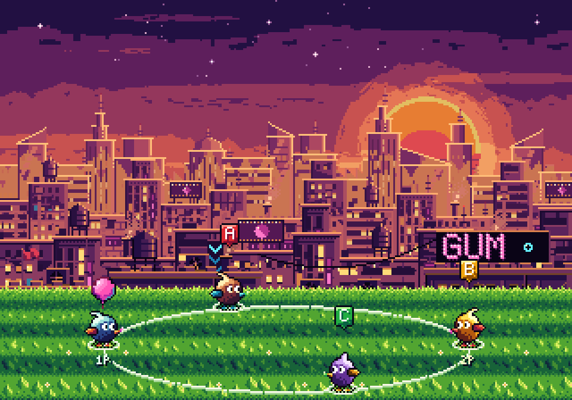
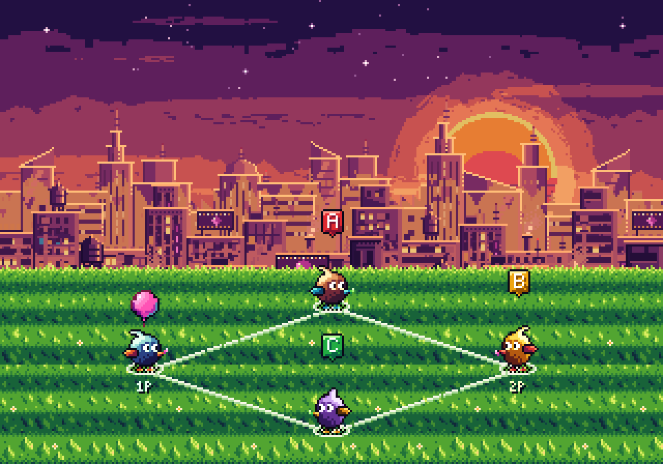
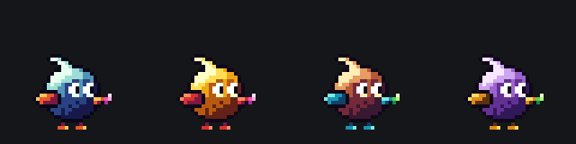
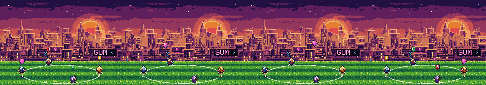
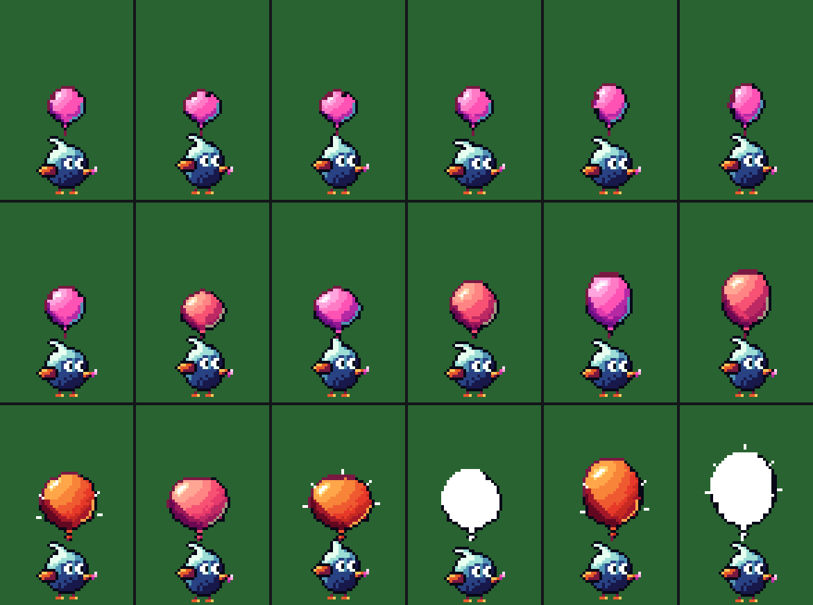
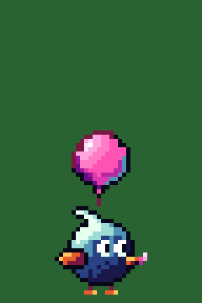
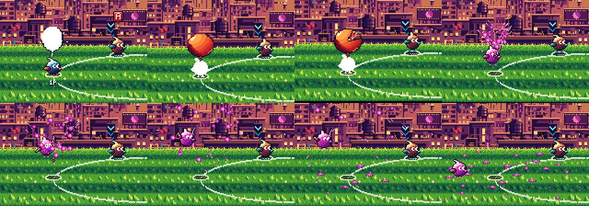
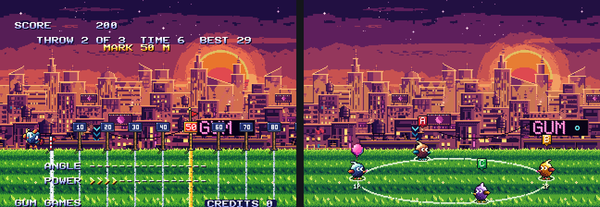

320 x 224 native, shown 3x. Dusk mood of the Gum Fling field. Birds, gum, pop frames, turf and city are the game's own art; tags, seat pads, shreds and splats are new hand grids. Seats: 1P left, 2P right, computer birds back and front. 1P holds the gum: A = left neighbour (back), B = across (2P), C = right neighbour (front).


1P and computer 1 are the game palettes. 2P (gold) and computer 2 (violet) are new 15 colour picks for this draft.

29 frames: hold with tags, B pressed, gum flies across (constant side speed, gravity), catch, new tags for the new carrier.


Rows: calm (small, pink, slow wobble), swelling (grows, pink and warm palette alternate), frantic (large, hot palette and white blink, one pixel shake, strain ticks). The fuse length stays hidden; only the stage shows. Colour change is a palette swap of the gum sheet's own warm and hot cue palettes.


52 frames: 6 frantic frames, then 46 burst frames. 40 gum shreds with speed in three axes, gravity, drag, one weak bounce for small ones, stick as splats; strands thin and snap; the carrier flashes white, turns gum pink (palette swap), is knocked out of the ring and blinks away; the others flinch.

Left: Gum Fling in the game (run-up, dusk). Right: Toss Gum layout 1.
